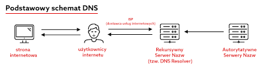

Podstawy informatyki 2024/2025
Co to jest DNS?

- DNS (Domain Name System) to system tłumaczący nazwy domenowe na adresy IP, które komputery wykorzystują do komunikacji.
- Umożliwia użytkownikom dostęp do stron internetowych poprzez wpisanie łatwej do zapamiętania nazwy, np.
example.com, zamiast trudnego do zapamiętania adresu IP, np. 192.0.2.1.
- DNS działa w sposób hierarchiczny i rozproszony, co zwiększa jego niezawodność i skalowalność.
- Podstawowe komponenty DNS to: serwery DNS (rekursywne, autorytatywne), rekordy DNS (np. A, AAAA, MX, CNAME) i zapytania DNS.
- DNS odgrywa kluczową rolę w funkcjonowaniu internetu bez niego konieczne byłoby zapamiętywanie adresów IP wszystkich stron.
- Istnieją również zagrożenia związane z DNS, takie jak spoofing (podmiana odpowiedzi) czy ataki typu DDoS na serwery DNS.